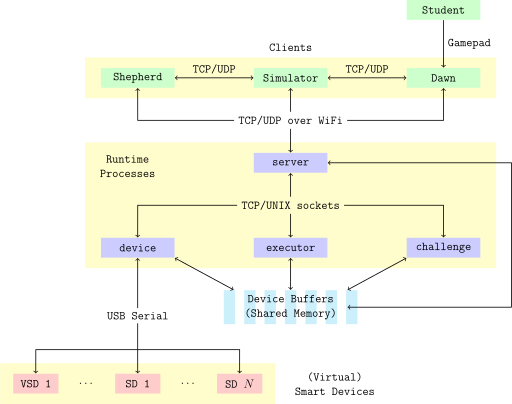
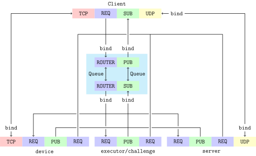

Architecture¶
Control Stack¶

Control Stack
Clients¶
The frontend for the PiE robotics kit, students use Dawn to write code in its text editor, view console output and SD data, and control their robots during teleop. Dawn and Runtime are the minimal components needed to control a robot.
Shepherd is the field control application, which commands each robot to start/stop, monitors each robot’s health, tallies up points scored in each match, and implements game mechanics like powerup selection and the match timer. Shepherd’s frontend is a progressive web app (PWA) with pages for the scoreboard, match schedule, staff-facing match administration dashboard, and game mechanic clients for each alliance.
The Simulator is essentially a physics engine that models robots interacting with each other and the field. It connects to Runtime to send and receive synthetic data for VSDs. The Simulator’s frontend, another PWA, allows students to view the environment and customize their virtual robot’s structure. To closely approximate competition conditions, the Simulator delegates student code execution to Runtime instead of duplicating functionality. Runtime’s student API is agnostic to the underlying hardware, whether physical or virtual.
Process Model¶
Runtime is structured as a distributed multiprocess application. The processes communicate with each other either over shared memory buffers or over TCP/UDP/UNIX sockets. Some sockets use ZeroMQ (ZMQ), a messaging library that extends plain BSD sockets. Each process is a microservice that responds to RPC requests.
serverRoutes remote procedure calls (RPC).
Publishes aggregated log data collected from each process.
Manages Runtime’s resources, such as other processes.
Publishes Smart Device data.
Receives gamepad inputs.
serveressentially acts as a broker between other Runtime processes and Runtime’s clients. This process is the “fixed” component of the architecture by binding to well-known addresses that all other processes/clients connect to.deviceDetects hotplugged devices in a helper thread.
Opens serial connections to each device.
Decode inbound Smart Device packets and writes updates into buffers.
Read buffers and encode outbound packets.
executor,challengeExecutes synchronous student code in the main thread, using alarms to time out execution.
Executes asynchronous student code in a helper thread.
executorruns autonomous and teleop code andchallengeruns coding challenges, but are otherwise identical.
Network Topology¶
Note
This guide will only detail IPC at the transport layer. For information on IPC formats and semantics, see IPC at the application layer.
All bound sockets are shown in the following table:
Transport |
Port/Path |
Binding Process |
ZMQ Type |
Description |
|---|---|---|---|---|
TCP |
6000 |
|
|
Clients issue synchronous
RPC requests to the TCP
frontend, which the backend
routes. Sockets connecting
to either end should have
the |
UNIX |
|
|||
UNIX |
|
|
|
|
TCP |
6001 |
|
|
The |
UNIX |
|
|
|
|
UDP |
6002 |
|
None |
Clients send gamepad inputs. |
UDP |
6003 |
Client |
None |
|
TCP |
6005 |
|
None |
A plain TCP connection for virtual Smart Devices. Drop-in replacement for serial. |
The connections opened by each process are shown in the following diagram for one client:

Socket Diagram
The two pairs of sockets in the center are ZMQ devices that have a frontend that clients connect to and a backend that services connect to. These devices may run in helper threads in the
serverprocess, meaning theserverprocess may communicate with itself.The
ROUTER-ROUTERdevice routes an incoming RPC request to the appropriate service and returns the response to the client. For ZMQ to route a message, the sender prefixes the message with the destination socket’s identity, a globally unique binary string. For that reason, the RPC request and response must include the client’s identity.Surprisingly, each socket connected to the backend has the
REQ, notREPtype, and the backend socket is not aDEALER. Each service must send the first message to the backend to inform the device of its ZMQ identity, which is the process name. This design is based on a load-balancing pattern from the ZMQ guide.Each process also has a second
REQsocket connected to the frontend, allowing every service to call every other service without requiring point-to-point connections. The routing device should prevent requests from cycling indefinitely.Following a fan-in, fan-out pattern, the
PUB-SUBdevice simply forwards log records collected on the backend to any number of clients subscribed to the frontend.Unlike most connections, clients connect directly to the
deviceservice to simulate a VSD. (The sockets are shown in red.)To subscribe to Smart Device updates, the client binds to multicast group
224.1.1.1, which Runtime connects to.
Warning
REQandREPsockets are stateful and will raise an exception if they do not strictly follow an alternating send/receive I/O pattern.REQmust start with send,REPmust start with receive. If a service fails while processing a request and restarts, the client will wait for a response that will never arrive and lock itself in the mute state. The solution is to timeout the client’s receive operation.When the transport allows it (i.e., is duplex), a ZMQ subscriber will notify its publishers which topics the publishers should filter preemptively to cut down on network traffic.
A publisher overwhelming a slow subscriber will back up the publisher’s send queue.
FAQ¶
- Why use multiple processes instead of multiple threads?
Some Python implementations, including CPython, use a global interpreter lock (GIL), which prevents multiple OS threads from running in parallel even when multiple physical cores are available. This behavior is essentially time-multiplexing.
Although multiprocessing complicates data sharing and incurs a heavier context switching performance penalty, each process has its own interpreter and avoids GIL contention. Extension modules that do not access Python objects may also release the GIL. With shared memory, the IPC latency for Smart Device data is essentially nonexistent.
A microservice architecture provides increased resilience, scalability, and modularity. Processes can be tested and restarted in isolation.
Messaging over sockets instead of an in-memory data structure shared among threads (like a queue) allows other tools to intergrate with Runtime.
- Why is true parallelism necessary at all? Runtime is heavily I/O-bound anyway.
This is true, but having all of Runtime’s functionality sharing the CPU time of a single core is still undesirable. First, a slow operation like reading a large packet can block the event loop slightly, increasing the latency of all other tasks. Obviously, compute-bound tasks should be delegated to a thread pool, but a delayed event loop is still a possible single point of failure. Second, Runtime should treat student code as possibly very inefficient in the worst case, and therefore, compute-bound.
- Why not delegate blocking tasks to a process pool?
Process pools are best suited for compute-heavy jobs where fine-grained control over workers is not needed. This precludes student code execution, since jobs cannot be canceled by the parent process or interrupted by an alarm in a worker process’s main thread.
- Why prefer ZMQ over plain sockets?
ZMQ exposes an interface based on multipart messages instead of TCP’s bytestreams, which frees us from dealing with low-level framing.
High-level messaging patterns, like publish-subscribe, and identity-based routing make it easy to build scalable network topologies that are agnostic to the underlying transports.
Limited persistence and asynchronous delivery guarantee requests go through even if a peer is temporarily disconnected. For example, if a peer is temporarily down, ZMQ can retry a connection attempt instead of reporting “connection refused” as TCP does. As its name implies, ZMQ provides the benefits of a message queue without a broker, a possible central point of failure.
- Why use so many separate TCP connections?
TCP is ubiquitous and works well with ZMQ. Because each connection is long-lived, TCP handshakes rarely occur and the only long-term overhead is keep-alive packet traffic. Rejected alternatives:
Multiplexed TCP: Not supported by ZMQ, and suffers from head-of-line blocking. One blocked channel with dropped or out-of-order packets will unnecessarily block all other channels.
SCTP: Supports multiple streams and is message-based. However, some OSs lack native implementations and poorly built network middleware may block SCTP traffic.
QUIC: QUIC supports multiple streams using UDP but, like SCTP, is not yet a mature, stable protocol.
UDP-only: Reliable transmission is required for some functionality. For example, student-logged messages must appear in Dawn’s console.
Consolidate the log socket pair with the RPC pair: Runtime would need to explicitly publish logs to all of its peers, which is an antipattern. The correct model for unidirectional asynchronous data flow is publish-subscribe.